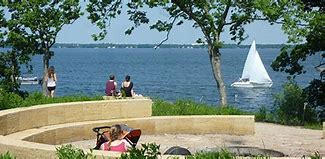
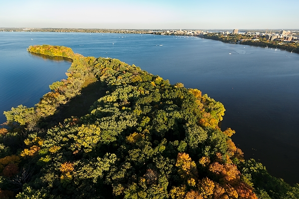
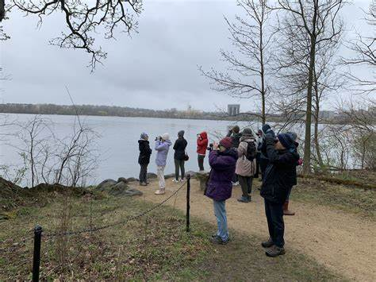
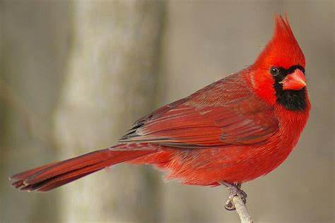
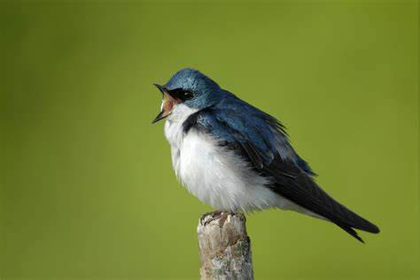

Accessible Birding Atlas of Wisconsin
Home
Map
Submit a Site
Resources
Checklist Generator
About
Contact
Accessibility Information
Wheelchair-accessible trails
20 parking spots (2 handicap spots)
Accessible restroom available
Gentle trail slopes
Benches available along the trail
Generate a Checklist for This Site
Printable Map
Visit Preserve Website
Site Photos
  
Bird Photos
 